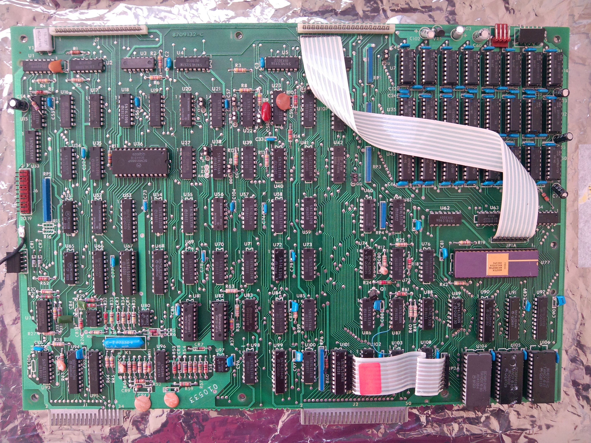

White flexible flat cables connect the floppy disk controller (FDC) and RS232 boards to the Model III mainboard. Unfortunately the cables deteriorate with age and cause problems when you need to repeatedly insert/remove them (e.g. when making repairs to the computer). The cable to the FDC was so bad that the FDC no longer functioned correctly.
The photo below shows a bad cable on the left, and a good cable on the right.
Part 1 of Ian Mavric's "Building the Super Micro" article outlined a method to replace the flexible flat cables with readily available IDE cables. Single strips of IDC pins (20 pins for each connector) would replace the existing connectors on the CPU, FDC, and RS232 boards.
Unsoldering the old connectors and completely removing all the solder from the PCB holes was done using a soldering iron and solder sucker, however it was quite challenging and time consuming. The IDC pins were thicker than the original connector's pins and therefore required all the solder to be removed from the PCB holes. Care must be taken not to overheat the PCB solder pads to prevent them from coming off and also prevent possible component damage. If you're not familiar with desoldering you should practise on some old boards first, or maybe get someone else to do it instead.
You can use standard 40 pin cables, commonly used with IDE hard disks, although you’ll only use one of the 20 pin rows of each cable. Even though you can cut up existing spare IDE hard disk cables, I found the length to be too long to neatly fit inside the system so I purchased a pair of 10cm cables from eBay (search for "2pcs FC40P 40Pin IDC Socket Extension Flat Ribbon Cable 10cm"), see photo below.
I removed the retaining clip from the cable at one end, and connected that to the new connector on the CPU board. The other end of the cable (with retaining clip still intact) was connected to the FDC or RS232 board as appropriate.
Here is a photo of the main board with the new IDE cables at the top.
For completeness here are the before and after photos of the individual boards, without cables connected.
CPU board before:
CPU board after:
Floppy disk controller board before:
Floppy disk controller board after:
RS232 board before:

RS232 board after: